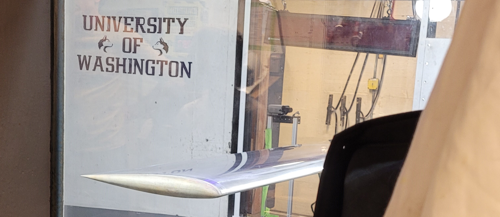

Arduino Setup and Ohm's Law
Summary
During the experiment, voltage, amperage, and resistance values were measured and analyzed according to Ohm's Law, considering uncertainties in measurements and resistor tolerances.
Arduino Setup and Ohm's Law ReportAbstract:
- Explored the influence of propeller geometry and pitch on propeller capability.
- Compared the performance metrics of four propellers of varying geometries and pitches in a 3x3 wind tunnel.
- Found performance metrics are dependent on propeller geometry and advance ratio.
Uncertainty and Graph
- Uncertainty calculations were conducted considering device error and resistor manufacturing tolerance.
- Uncertainties due to measuring devices do not propagate into other values.
Discussion of Results
- Voltage drop across the 10kΩ resistor was measured to be 4.980V, slightly outside the expected value.
- Uncertainties in measurements were attributed to device error and resistor manufacturing tolerances.
- The measured voltage from the Digital Multi-meter was 4.980V, within the tolerance rate of the 10kΩ resistor.
Graph: The results of the 10kΩ and 20kΩ from experiment.
Diagrams
- Figure 1: Diagram of circuit with one 10kΩ resistor
- Figure 2: Diagram of circuit with 10kΩ and 20kΩ resistors wired in series
- Figure 3: Diagram of 10kΩ resistor and LED wired in series
- Figure 4: Diagram of 10kΩ resistor, potentiometer, and LED wired in series